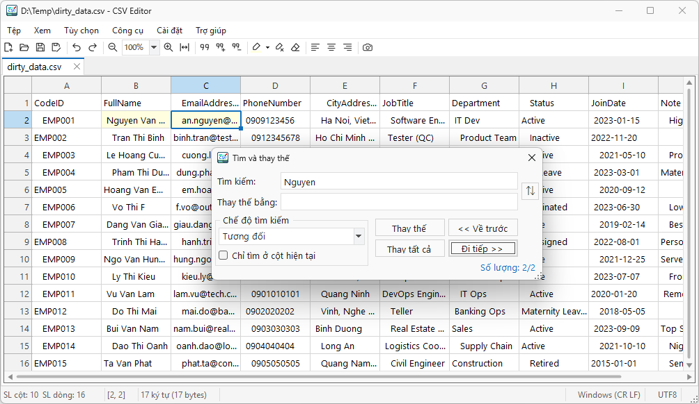
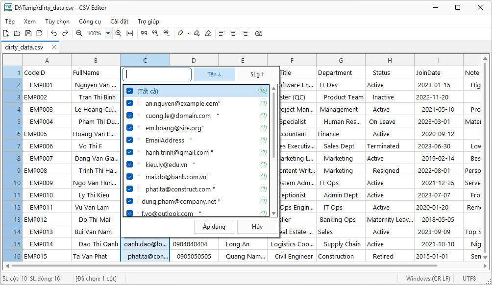

Tài liệu hướng dẫn CSV Editor CSV Editor User Documentation CSV Editor ユーザーガイド
Hướng dẫn chính thức phản ánh đúng các tính năng đã triển khai trong phiên bản (.NET 8, Windows). Nhấn Ctrl+K bất cứ lúc nào để tìm nhanh. Official user guide reflecting the implemented features of (.NET 8, Windows). Press Ctrl+K anytime to search. （.NET 8・Windows）に実装されている機能を正確に反映した公式ガイドです。Ctrl+Kでいつでも検索できます。
Tổng quan Overview 概要
CSV Editor là ứng dụng Windows desktop viết bằng .NET 8 và Windows Forms (không sử dụng thư viện NuGet bên ngoài), chuyên dùng để mở, kiểm tra và chỉnh sửa tệp .csv, .tsv và các tệp văn bản phân cách khác mà không làm biến dạng dữ liệu gốc.
- Phiên bản hiện tại:
- Nền tảng: Windows 10 / 11 với .NET 8.0 Desktop Runtime.
- Chế độ triển khai: Bản Portable (lưu tệp cấu hình
CSVEditor.configđã mã hóa ngay cạnh file chạy) và bản Install (lưu cấu hình trong thư mục Roaming AppData). - Chính sách & Bản quyền: Áp dụng CSVEditor Software License v1.0. Ứng dụng hiển thị màn hình xác nhận điều khoản ở lần chạy đầu tiên (hoặc khi phiên bản giấy phép thay đổi).
- Đơn phiên bản (Single-Instance): Khi mở thêm tệp CSV từ dòng lệnh hoặc File Explorer, CSV Editor tự động chuyển tiếp tệp sang cửa sổ đang mở dưới dạng tab mới.
CSV Editor is a native Windows desktop application built with .NET 8 and Windows Forms (zero external NuGet dependencies), designed to open, inspect, validate, and edit .csv, .tsv, and other delimited text files without silently altering raw data.
- Current Version:
- Platform: Windows 10 / 11 with .NET 8.0 Desktop Runtime.
- Deployment Modes: Portable (stores encrypted
CSVEditor.configin the application directory) and Install (stores config in Roaming AppData). - License: Governed by CSVEditor Software License v1.0. A one-time acceptance dialog is shown on first launch (or when the license version changes).
- Single-Instance Forwarding: Opening additional files via CLI arguments or Explorer forwards them as new tabs in the running instance.
CSV Editorは.NET 8とWindows Formsで構築された（外部NuGet依存なしの）Windowsデスクトップアプリです。.csv・.tsvなどの区切りテキストを元データを損なわずに閲覧・検証・編集できます。
- 現在のバージョン:
- プラットフォーム: Windows 10 / 11（.NET 8.0 Desktop Runtime）
- 配布形態: ポータブル版（実行フォルダ内に暗号化された
CSVEditor.configを保存）とインストーラー版（Roaming AppDataに保存）。 - ライセンス: CSVEditor Software License v1.0。初回起動時（または規約更新時）に同意画面が表示されます。
- シングルインスタンス: コマンドラインやエクスプローラーからファイルを開くと、起動中のウィンドウに新しいタブとして追加されます。
Giao diện làm việc Workspace & Interface 画面構成
Cửa sổ chính của CSV Editor gồm 6 thành phần trực quan:
- Thanh menu (Navigation Bar): Gồm các mục
Tệp,Xem,Tùy chọn,Công cụ,Trợ giúpvà nút mở nhanh Cài đặt đặt trực tiếp trên thanh điều hướng (từ v3.1.0.0). - Thanh công cụ (Button Bar): Nút thao tác nhanh cho Tạo mới, Mở, Lưu, Lưu thành, Đóng, Hoàn tác/Làm lại, Thu phóng (50%–500%), Tự động chỉnh cột, Dấu ngoặc kép, Tô màu Highlight, Căn lề, Chụp vùng nhìn (Viewport Capture) và nút bật/tắt Error Panel ở góc phải.
- Thanh Tab đa tệp: Cho phép mở nhiều tệp song song. Nhấp chuột phải vào tab để chọn Đóng tab, Đóng các tab khác, Đóng các tab bên phải hoặc Đóng tất cả.
- Lưới dữ liệu HyperSheet: Lưới bảng tính tùy chỉnh hiển thị tiêu đề hàng/cột, vùng đóng băng, biểu tượng lọc/sắp xếp, Fill Handle và cột hiển thị ký tự xuống dòng (tùy chọn).
- Bảng lỗi (Error Panel): Hiển thị danh sách lỗi kiểm tra dữ liệu CSV theo thời gian thực khi bật Validation.
- Thanh trạng thái (Status Bar): Hiển thị tổng số cột/dòng (hoặc
Hiển thị: X / Y dòngkhi đang lọc), tọa độ ô hiện tại[cột, dòng], số ký tự & byte (khi chọn 1 ô) hoặc tổng giá trị sốSum(khi chọn nhiều ô), thanh tiến trình, cùng nút bấm nhanh đổi Kiểu xuống dòng và Bảng mã (Encoding).

The CSV Editor main window consists of six core areas:
- Menu Bar (Navigation Bar): Provides
File,View,Options,Tools,Help, plus a direct Settings entry placed on the top bar for fast access (since v3.1.0.0). - Toolbar (Button Bar): Quick buttons for New, Open, Save, Save As, Close, Undo/Redo, Zoom (50%–500%), Auto-Resize Columns, Quote Marks, Cell Highlighting, Alignment, Viewport Capture, and the Error Panel toggle on the right.
- Multi-Tab Bar: Work with multiple files side by side. Right-click any tab for Close Tab, Close Other Tabs, Close Tabs to the Right, and Close All Tabs.
- HyperSheet Grid: Custom virtualized spreadsheet grid featuring row/column headers, freeze panes, filter/sort indicators, Fill Handle, and an optional Newline Viewport column.
- Error Panel: Collapsible real-time CSV validation panel listing issues with quick navigation.
- Status Bar: Shows column/row counts (or
Showing: X / Y rowswhen filtered), active cell[col, row], character/byte count (single cell) or numericSum(multi-cell selection), progress indicator, and clickable Line Ending & Encoding menus.
CSV Editorのメインウィンドウは次の6つのエリアで構成されています：
- メニューバー:
ファイル、表示、オプション、ツール、ヘルプに加え、v3.1.0.0から独立配置された設定ボタンを備えています。 - ツールバー: 新規作成・開く・保存・Undo/Redo・ズーム（50%〜500%）・列幅自動調整・引用符操作・ハイライト・配置・ビューポート撮影・右端のエラーパネル切替ボタン。
- マルチタブバー: 複数ファイルを同時編集。タブの右クリックでタブを閉じる・他のタブを閉じる・右側のタブを閉じる・すべて閉じるが可能です。
- HyperSheetグリッド: 行列固定、フィルタ・ソート表示、オートフィルハンドル、オプションの改行コード列を備えた独自グリッド。
- エラーパネル: データ検証を有効にした際のリアルタイム警告・エラー一覧。
- ステータスバー: 列数・行数（フィルタ中は表示件数）、選択セル座標
[列, 行]、単一セルの文字数・バイト数または複数選択時の数値Sum、クリック可能な改行コード・文字コードメニュー。
Mở, tạo mới & lưu tệp Open, Create & Save Files ファイルの作成・開閉・保存
Mở tệp cục bộ hoặc từ URL
Mục đích: Tải dữ liệu CSV/TSV/TXT từ máy tính hoặc nguồn web vào một tab mới.
- Mở từ máy tính: Vào
Tệp → Mở(Ctrl+O) hoặc kéo thả tệp trực tiếp vào cửa sổ. Ứng dụng tự động nhận diện bảng mã (Encoding) và từ chối mở tệp nhị phân không phải văn bản (trừ tệp đã được mã hóa bởi CSV Editor). - Mở từ URL: Vào
Tệp → Mở từ URL(Ctrl+Shift+O), dán liên kếthttp://hoặchttps://để tải trực tiếp qua luồng stream. - File mở gần đây: Vào
Tệp → File mới mở(lưu tối đa 10 tệp) hoặc nhấn Ctrl+1 đến Ctrl+9. Có thể xóa lịch sử bằng mục Xóa danh sách.
Tạo tệp mới
- Vào
Tệp → Tạo mớihoặc nhấn Ctrl+N. - Nhập số lượng cột và dòng ban đầu mong muốn.
- Bắt đầu nhập liệu trực tiếp trên lưới.
Lưu tệp an toàn & Theo dõi thay đổi bên ngoài
- Nhấn Ctrl+S để lưu (hoặc Ctrl+Shift+S để Lưu thành…). Dữ liệu được ghi qua
SafeFileWriter(ghi ra tệp tạm cùng ổ đĩa rồi thay thế nguyên tử) để tránh hỏng tệp gốc nếu xảy ra sự cố giữa chừng. - Nếu tệp đang mở bị chương trình khác chỉnh sửa bên ngoài,
FileWatchersẽ tự động thông báo để bạn chọn tải lại. - Khi đóng chương trình lúc đang mở từ 2 tab trở lên, ứng dụng sẽ hỏi xác nhận (có thể bật/tắt trong Cài đặt → Chung, tương tự với hộp thoại xác nhận trước khi lưu).

Opening Local Files or URLs
Purpose: Load delimited text files from disk or HTTP/HTTPS into a new tab.
- Open Local File: Go to
File → Open(Ctrl+O) or drag and drop files onto the window. Encoding is auto-detected, and binary files are rejected unless recognized as CSV Editor encrypted files. - Open from URL: Go to
File → Open from URL(Ctrl+Shift+O) and enter anhttp://orhttps://URL to stream-load directly. - Recent Files: Access up to 10 recent files via
File → Recent Filesor press Ctrl+1 through Ctrl+9.
Creating a New File
- Select
File → Newor press Ctrl+N. - Specify the initial row and column dimensions and begin editing immediately.
Crash-Safe Saving & External Change Watcher
- Press Ctrl+S to save (or Ctrl+Shift+S for Save As).
SafeFileWriterwrites to a temporary file on the same volume, flushes it, and atomically replaces the destination file. - If an open file is modified externally,
FileWatcherdetects the change and prompts you to reload. - Closing the app with 2+ tabs open shows a confirmation prompt (configurable along with Save confirmation under Settings → General).
ローカルファイル・URLを開く
- ローカルファイル:
ファイル → 開く（Ctrl+O）またはウィンドウへのドラッグ＆ドロップで開きます。文字コードは自動判定され、バイナリファイル（本アプリの暗号化ファイルを除く）は安全に拒否されます。 - URLから開く:
ファイル → URLから開く（Ctrl+Shift+O）でhttp://・https://から直接ストリーム読み込みできます。 - 最近使ったファイル: 最大10件を履歴保持。Ctrl+1〜Ctrl+9で素早く開けます。
新規作成と安全な保存
ファイル → 新規作成（Ctrl+N）で初期の行数・列数を指定して作成します。- Ctrl+S（名前を付けて保存はCtrl+Shift+S）で保存時、
SafeFileWriterが同一ボリュームの一時ファイルに書き出してから安全に置換します。 - 外部アプリによるファイル変更は
FileWatcherが検知し、再読み込みを確認します。
Chỉnh sửa ô & Đề xuất nhập liệu (Auto-Suggest) Cell Editing & Auto-Suggest セル編集と入力候補（Auto-Suggest）
Mục đích: Nhập và chỉnh sửa giá trị trực tiếp trong từng ô trên lưới HyperSheet (hỗ trợ cả nội dung nhiều dòng).
- Nhấp đúp vào ô, nhấn F2, chọn Chỉnh sửa ô trong menu chuột phải, hoặc gõ ký tự trực tiếp để vào chế độ sửa.
- Nhấn Alt+Enter để chèn ký tự xuống dòng ngay trong ô.
- Nhấn Enter hoặc Tab để xác nhận; nhấn Esc để hủy thay đổi.
- Nhấn Delete hoặc Backspace khi đang chọn ô để xóa nhanh nội dung.
Đề xuất nhập liệu (Auto-Suggest)
Khi gõ dữ liệu, AutoSuggestManager tự động gợi ý tối đa 10 giá trị phù hợp (ưu tiên từ cột hiện tại, sau đó từ bảng chuỗi chung). Dùng phím mũi tên ↑/↓ và Enter/Tab để chọn, hoặc Esc để đóng. Tính năng này có thể bật/tắt trong Cài đặt → Giao diện.
CSV Editor chỉnh sửa trực tiếp trên ô (inline overlay), không có thanh công thức (Formula Bar) và không thực thi công thức Excel.
Purpose: Edit single-line and multiline text directly inside HyperSheet cells.
- Double-click a cell, press F2, use Context Menu → Edit Cell, or start typing any printable character.
- Press Alt+Enter to insert a line break inside the cell.
- Press Enter or Tab to commit; press Esc to discard edits.
- Press Delete or Backspace to clear the contents of selected cells.
Inline Auto-Suggest
While typing, AutoSuggestManager displays up to 10 matching suggestions prioritized from the current column and then the global string pool. Use ↑/↓ + Enter/Tab to accept, or toggle it in Settings → Appearance.
Editing is strictly inline (no separate formula bar), and CSV Editor stores raw text without evaluating spreadsheet formulas.
目的: HyperSheetセル内で単一行・複数行のテキストを直接編集します。
- セルをダブルクリック、F2キー、右クリックのセルを編集、または文字入力で編集モードに入ります。
- セル内で改行するにはAlt+Enterを押します。
- EnterまたはTabで確定、Escでキャンセルします。
- 選択セルの内容を消去するにはDeleteまたはBackspaceを押します。
入力候補（Auto-Suggest）
入力時に現在の列および全体の文字列プールから最大10件の候補を表示します。↑/↓とEnter/Tabで確定でき、設定 → 外観でオン/オフを切り替えられます。
Chọn vùng, Sao chép & Dán Selection, Copy & Paste 範囲選択・コピー＆貼り付け
- Chọn vùng linh hoạt: Hỗ trợ chọn đơn ô, kéo chọn vùng hình chữ nhật, chọn nguyên hàng/cột qua tiêu đề, mở rộng vùng với Shift, chọn nhiều vùng không liền kề với Ctrl+Click, chọn tất cả với Ctrl+A, và thu gọn vùng chọn về ô hiện tại với Esc.
- Sao chép đa định dạng (Delayed Rendering): Khi nhấn Ctrl+C hoặc Ctrl+X,
SpreadsheetClipboardHandlercung cấp đồng thời 4 định dạng qua cơ chế render trễ của Windows: Plain Text (TSV), HTML Table (giữ định dạng bảng khi dán vào Word/Email), Bitmap (CF_DIB) và PNG. - Dán theo lô bất đồng bộ: Nhấn Ctrl+V để dán dữ liệu bắt đầu từ ô đang chọn qua
BatchPasteController(hỗ trợ hoàn tác).
- Flexible Selection: Supports single cells, rectangular drag ranges, full rows/columns via headers, Shift range extension, non-contiguous multi-selection with Ctrl+Click, Select All (Ctrl+A), and Esc to collapse selection.
- Multi-Format Copy (Delayed Rendering): Ctrl+C / Ctrl+X registers four Win32 delayed-rendering clipboard formats: Plain Text (TSV), styled HTML Table, Bitmap (CF_DIB), and PNG.
- Async Batch Paste: Ctrl+V pastes starting at the active cell via
BatchPasteControllerwith full Undo support.
- 柔軟な選択: 単一セル、ドラッグによる矩形範囲、ヘッダーによる行・列選択、Shift拡張、Ctrl+クリックによる非連続複数選択、Ctrl+A（全選択）、Esc（選択解除）に対応。
- マルチフォーマットコピー（遅延レンダリング）: Ctrl+C / Ctrl+Xはテキスト（TSV）、HTMLテーブル、Bitmap（CF_DIB）、PNGの4形式をクリップボードに提供します。
- 非同期バッチ貼り付け: Ctrl+Vは
BatchPasteController経由で貼り付け、Undoにも対応します。
Fill Handle & Tự động điền (Auto Fill) Fill Handle & Auto Fill フィルハンドル＆オートフィル
Mục đích: Tự động sao chép hoặc sinh chuỗi dữ liệu nối tiếp bằng cách kéo thả tương tự Excel.
- Chọn một ô hoặc một dãy ô mẫu (ví dụ:
1, 2hoặcItem-01). - Đưa chuột tới chấm vuông nhỏ (Fill Handle) ở góc dưới bên phải vùng chọn.
- Kéo thả theo chiều dọc/ngang, hoặc nhấp đúp vào Fill Handle để tự động điền xuống theo cột liền kề.
- Sau khi thả chuột, nhấp vào biểu tượng AutoFill Options vừa xuất hiện để chuyển đổi giữa Điền theo chuỗi (Fill Series) và Sao chép ô (Copy Cells).
9 chiến lược nhận diện chuỗi đã triển khai: Công thức (Formula text), Thứ trong tuần (Weekday), Tháng (Month), Ngày kiểu Nhật (Custom Japanese Date, hỗ trợ chuẩn hóa ký tự Zenkaku), Ngày/Giờ (DateTime), Số (Number), Boolean, Chuỗi chữ-số (AlphaNumeric) và Sao chép văn bản (TextCopy).
Purpose: Quickly extend patterns or copy cell values across rows and columns like Excel.
- Select a source cell or pattern range (e.g.,
1, 2orEMP001). - Hover over the small square Fill Handle at the bottom-right corner of the selection.
- Drag vertically or horizontally—or double-click the Fill Handle to auto-fill down adjacent rows.
- Use the AutoFill Options popup afterward to switch between Fill Series and Copy Cells (press Esc to dismiss).
9 implemented fill strategies: Formula, Weekday, Month, Custom Japanese Date (with Zenkaku normalization), DateTime, Number, Boolean, AlphaNumeric, and TextCopy.
目的: Excelのようにドラッグやダブルクリックで連番・日付・テキストを自動入力します。
- 元となるセルまたは範囲（例:
1, 2やEMP001）を選択します。 - 選択枠の右下角にあるフィルハンドルにカーソルを合わせます。
- 上下左右へドラッグ、またはダブルクリックして隣接列に合わせて自動入力します。
- 完了後に表示されるAutoFill Optionsポップアップから連続データ（Fill Series）とセルのコピー（Copy Cells）を切り替えられます。
実装済みの9戦略: 数式文字列、曜日、月、和暦・日本語日付（全角正規化対応）、日時、数値、真偽値、英数字連番、テキストコピー。
Thao tác Hàng, Cột & Menu chuột phải Rows, Columns & Context Menus 行・列操作とコンテキストメニュー
Các thao tác cấu trúc hàng/cột được cung cấp qua Menu chuột phải (Context Menu) và đều hỗ trợ Hoàn tác (Ctrl+Z):
| Vị trí nhấp chuột phải | Các lệnh khả dụng |
|---|---|
| Ô dữ liệu (Cell) | Chỉnh sửa ô (F2), Xóa ô (dịch trái), Đóng băng hàng, Đóng băng cột. |
| Tiêu đề Hàng (Row Header) | Chèn 1 hàng phía trên / phía dưới (Ctrl+Insert), Chèn nhiều hàng (1–9999), Đóng băng / Bỏ đóng băng hàng, Ẩn hàng đang chọn, Hiện hàng đang chọn, Hiện tất cả hàng, Xóa hàng đang chọn (Ctrl+Delete). |
| Tiêu đề Cột (Column Header) | Lọc cột, Sắp xếp cột (Tăng dần / Giảm dần / Tự nhiên / Ngẫu nhiên), Chèn 1 hoặc nhiều cột (trước / sau, 1–9999), Đóng băng / Bỏ đóng băng cột, Ẩn / Hiện cột đang chọn, Hiện tất cả cột, Xóa cột đang chọn. |
Nhảy nhanh tới hàng/cột: Nhấn Ctrl+G (Đi tới hàng), Ctrl+Shift+G (Đi tới cột), hoặc nhấp đúp trực tiếp vào tiêu đề hàng/cột để mở hộp thoại Go To.
Structural row and column operations are accessed via Context Menus and are fully undoable (Ctrl+Z):
| Right-Click Target | Available Commands |
|---|---|
| Data Cell | Edit Cell (F2), Delete Cells (shift left), Freeze Row, Freeze Column. |
| Row Header | Insert Row Above / Below (Ctrl+Insert), Insert Multiple Rows (1–9999), Freeze / Unfreeze Row, Hide Selected Rows, Unhide Selected / All Rows, Delete Selected Rows (Ctrl+Delete). |
| Column Header | Filter Column, Sort Column (Ascending / Descending / Natural / Shuffle), Insert 1 or N Columns (Before / After, 1–9999), Freeze / Unfreeze Column, Hide / Unhide Selected / All Columns, Delete Selected Columns. |
Quick Go To: Press Ctrl+G (Go To Row), Ctrl+Shift+G (Go To Column), or double-click a row/column header.
行・列の追加・削除などは右クリックメニューから実行でき、すべてCtrl+Zで元に戻せます：
| 右クリック位置 | 利用可能なコマンド |
|---|---|
| データセル | セルを編集（F2）、セルを削除（左詰め）、行の固定、列の固定。 |
| 行ヘッダー | 上/下に行を挿入（Ctrl+Insert）、複数行の挿入（1〜9999）、行の固定/解除、選択行の非表示/再表示/すべて表示、選択行の削除（Ctrl+Delete）。 |
| 列ヘッダー | 列フィルタ、列の並べ替え（昇順/降順/自然順/シャッフル）、前/後に1列または複数列を挿入（1〜9999）、列の固定/解除、非表示/再表示/すべて表示、選択列の削除。 |
指定行・列へ移動: Ctrl+G（行へ移動）、Ctrl+Shift+G（列へ移動）、または行・列ヘッダーのダブルクリックで開きます。
Tìm kiếm, Thay thế & Truy vấn SQL Find, Replace & SQL Query 検索・置換・SQLクエリ
Mở hộp thoại bằng Xem → Tìm và thay thế hoặc nhấn Ctrl+F / Ctrl+H. Dùng F3 (Đi tiếp), Shift+F3 (Về trước) và Esc để đóng và tắt vùng tô sáng.
6 chế độ tìm kiếm
- Tương đối (Contains): Khớp ô có chứa chuỗi tìm kiếm.
- Chính xác (Accurate): Khớp toàn bộ nội dung ô.
- Bắt đầu với (StartsWith) & Kết thúc với (EndsWith).
- Regex: Biểu thức chính quy biên dịch (
CultureInvariant), hỗ trợ thay thế theo mẫu. - SQL: Truy vấn điều kiện kiểu mệnh đề
WHERE. Hỗ trợ toán tử=,!=/<>,>,>=,<,<=,LIKE,NOT LIKE,IN,NOT IN,IS NULL,IS NOT NULL,BETWEEN,AND/OR, tham chiếu cột theo tên tiêu đề hoặc$1,$2và so sánh giữa hai cột. Có thể bấm nút Lọc để lọc trực tiếp lưới theo các dòng khớp điều kiện SQL.
-- Ví dụ truy vấn SQL WHERE
$2 LIKE '%Nguyen%' AND $4 IS NOT NULL OR $5 = 'Active'Tùy chọn Chỉ tìm ở cột hiện tại giúp thu hẹp phạm vi tìm/thay thế vào đúng cột đang chọn.

Open via View → Find and Replace or press Ctrl+F / Ctrl+H. Navigate matches with F3 (Next), Shift+F3 (Previous), and press Esc to close and clear highlights.
6 Search Modes
- Contains (Relative): Matches cells containing the query.
- Accurate (Exact): Matches the entire cell value.
- StartsWith & EndsWith.
- Regex: Compiled
CultureInvariantregular expressions for search and replace. - SQL:
WHERE-clause query supporting=,!=/<>,>,>=,<,<=,LIKE,NOT LIKE,IN,NOT IN,IS NULL,IS NOT NULL,BETWEEN,AND/OR, column names or positional$1/$2, and column-to-column comparisons. Includes a Filter action to filter the grid to matching rows.
-- Example SQL WHERE query
$2 LIKE '%Nguyen%' AND $4 IS NOT NULL OR $5 = 'Active'Enable Find Only Column to restrict search and replacement to the currently selected column.
表示 → 検索と置換またはCtrl+F / Ctrl+Hで開きます。F3（次へ）、Shift+F3（前へ）、Esc（閉じてハイライト解除）に対応します。
6つの検索モード
- 部分一致（Contains） / 完全一致（Accurate） / 先頭一致（StartsWith） / 末尾一致（EndsWith）
- Regex: 正規表現（
CultureInvariant）による検索・置換。 - SQL:
=、!=、>、<、LIKE、IN、IS NULL、BETWEEN、AND/OR、列名または$1/$2指定に対応したWHERE句検索。一致行だけをグリッドに表示するフィルタ機能付き。
-- SQL WHERE クエリの例
$2 LIKE '%Nguyen%' AND $4 IS NOT NULL OR $5 = 'Active'Sắp xếp & Lọc dữ liệu Sorting & Filtering 並べ替えとフィルタ
Sắp xếp theo cột
Nhấp chuột phải vào Tiêu đề cột → Sắp xếp cột và chọn một trong 4 chế độ:
- Tăng dần (Ascending) / Giảm dần (Descending)
- Tự nhiên (Natural): Sắp xếp chuỗi có chứa số đúng theo thứ tự số học (ví dụ:
Item2đứng trướcItem10). - Ngẫu nhiên (Shuffle): Xáo trộn ngẫu nhiên thứ tự các dòng.
Lọc cột kiểu Excel
- Nhấp chuột phải vào Tiêu đề cột → Lọc cột (hoặc nhấp vào biểu tượng lọc trên tiêu đề cột).
- Dùng ô Tìm kiếm… để thu hẹp danh sách giá trị duy nhất, hoặc sắp xếp danh sách theo Tên hoặc Số lượng (SLg).
- Chọn/bỏ chọn các giá trị muốn hiển thị rồi nhấn Áp dụng.
Bạn có thể kết hợp bộ lọc trên nhiều cột cùng lúc. Khi đang lọc, tiêu đề các hàng khớp sẽ được đánh dấu và Thanh trạng thái hiển thị Hiển thị: X / Y dòng.

Column Sorting
Right-click a Column Header → Sort Column and choose from four modes:
- Ascending / Descending
- Natural: Numeric-aware string sorting (e.g.,
Item2beforeItem10). - Shuffle: Randomly shuffles rows.
Excel-Style Column Filtering
- Right-click a Column Header → Filter Column (or click the header filter icon).
- Search within unique values, sort the checklist by Name or Count, and check/uncheck items.
- Click Apply. Combine filters across multiple columns; the Status Bar shows
Showing: X / Y rows.
列の並べ替えとフィルタ
- 並べ替え: 列ヘッダーを右クリック → 列を並べ替えから昇順・降順・自然順（Natural）・シャッフルを選択できます。
- フィルタ: 列ヘッダー右クリック → 列フィルタで値リストを検索・名前順/件数順ソートし、複数列の条件を組み合わせて絞り込めます。
Kiểm tra dữ liệu (Validation) & Error Panel Data Validation & Error Panel データ検証とエラーパネル
Mục đích: Tự động phát hiện các lỗi định dạng CSV phổ biến trước khi lưu hoặc chia sẻ dữ liệu.
8 quy tắc kiểm tra đã triển khai (cấu hình bật/tắt và mức độ Error / Warning / Info trong Cài đặt → Kiểm tra dữ liệu):
- Dấu ngoặc kép không cân bằng (
Unbalanced Quotes) - Chuỗi ngoặc kép rỗng (
Empty Quoted String) - Khoảng trắng thừa ở đầu/cuối (
Trailing Spaces) - Ký tự xuống dòng chưa được bao ngoặc kép (
Unquoted Newline) - Ký tự phân cách chưa được bao ngoặc kép (
Unquoted Delimiter) - Giá trị ngày tháng chưa bao ngoặc kép (
Unquoted Date) - Số có chữ số 0 ở đầu (
Leading Zeros) - Ký tự đặc biệt (
Special Characters)
Cách xử lý: Mở Error Panel từ nút ở góc phải thanh công cụ, nhấp đúp vào một lỗi để nhảy tới đúng ô, hoặc nhấp vào góc báo lỗi của ô để mở menu Quick Fix (Thêm ngoặc kép, Xóa khoảng trắng thừa, Làm sạch ký tự, Sửa tất cả, Bỏ qua hoặc Bỏ qua tất cả lỗi tương tự).
Purpose: Catch common CSV formatting defects in real time before saving or exporting.
8 configurable validation rules (enable/disable and set severity to Error, Warning, or Info in Settings → Validation):
- Unbalanced Quotes
- Empty Quoted String
- Trailing Spaces
- Unquoted Newline
- Unquoted Delimiter
- Unquoted Date
- Leading Zeros
- Special Characters
Workflow: Toggle the Error Panel from the right side of the toolbar, double-click any issue to jump to the cell, or click the cell error indicator for Quick Fix actions (Add Quotes, Remove Spaces, Escape/Clean, Fix All, Ignore, or Ignore All Similar).
目的: 保存前にCSV特有のフォーマット問題をリアルタイムで検出します。
設定可能な8つの検証ルール（設定 → 検証で有効/無効および重要度Error・Warning・Infoを変更可能）：引用符の不整合、空の引用符文字列、末尾スペース、未クォート改行、未クォート区切り文字、未クォート日付、先頭ゼロ、特殊文字。
ツールバー右端のボタンでエラーパネルを開き、項目をダブルクリックして該当セルへ移動、またはセル角のエラー表示からクイック修正（一括修正・引用符追加・空白除去・無視など）を実行できます。
Đóng băng, Ẩn/Hiện, Chỉnh kích thước & Thu phóng Freeze Panes, Hide/Show, Resize & Zoom 行列固定・非表示・サイズ変更・ズーム
- Đóng băng hàng/cột (Freeze Panes): Nhấp chuột phải vào ô hoặc tiêu đề hàng/cột chọn Đóng băng hàng / Đóng băng cột để cố định vùng từ đầu đến vị trí hiện tại khi cuộn. Bỏ đóng băng qua menu chuột phải trên tiêu đề.
- Ẩn / Hiện hàng & cột: Chọn các hàng/cột → nhấp chuột phải vào tiêu đề → Ẩn / Hiện đang chọn / Hiện tất cả (không áp dụng cho hàng/cột đang đóng băng).
- Chỉnh kích thước & AutoFit: Kéo đường biên tiêu đề hàng/cột để chỉnh thủ công, nhấp đúp đường biên để AutoFit một cột/hàng, hoặc nhấn Ctrl+R (
Xem → Tự động chỉnh cột) để tự động căn độ rộng toàn bộ cột. - Thu phóng (Zoom): Từ 50% đến 500% qua thanh công cụ, Ctrl++, Ctrl+-, Ctrl+0 (100%) hoặc Ctrl+Cuộn chuột.
- Dấu ngoặc kép, Highlight & Căn lề: Nhấn Ctrl+Q để ẩn/hiện dấu ngoặc kép; dùng thanh công cụ để thêm/bỏ dấu ngoặc kép hàng loạt, tô màu nền ô (tùy chọn màu Highlight tùy chỉnh) và căn lề Trái / Giữa / Phải.
- Luôn ở trên cùng (Always on Top): Bật/tắt qua
Xem → Luôn ở trên cùnghoặc Cài đặt → Chung.
- Freeze Panes: Right-click a cell or row/column header and select Freeze Row or Freeze Column independently. Unfreeze from the header context menu.
- Hide / Show Rows & Columns: Right-click row/column headers → Hide Selected, Unhide Selected, or Unhide All (disabled on frozen rows/columns).
- Resize & AutoFit: Drag header dividers to resize, double-click a divider to AutoFit that column/row, or press Ctrl+R to AutoFit all columns.
- Zoom (50%–500%): Use toolbar controls, Ctrl++, Ctrl+-, Ctrl+0 (reset 100%), or Ctrl+Mouse Wheel.
- Quotes, Highlight & Alignment: Press Ctrl+Q to toggle quote visibility; use the toolbar to batch add/remove quotes, apply custom highlight colors, and align Left / Center / Right.
- Always on Top: Toggle via
View → Always on Topor Settings → General.
- 行列の固定（Freeze Panes）: セルまたは行・列ヘッダーの右クリックから行・列を個別に固定/解除できます。
- 行・列の非表示/再表示: ヘッダー右クリックから非表示・再表示・すべて表示が可能です（固定中の行列は対象外）。
- リサイズ＆自動調整: 境界線ドラッグで変更、ダブルクリックで個別AutoFit、Ctrl+Rで全列を自動調整します。
- ズーム（50%〜500%）: ツールバー、Ctrl++/-/0、またはCtrl+マウスホイール。
- 引用符・ハイライト・配置: Ctrl+Qで引用符表示切替。ツールバーから引用符の一括追加/削除、カスタム色ハイライト、左/中央/右揃えを実行できます。
Ký tự xuống dòng & Cột hiển thị Newline Line Endings & Newline Viewport Column 改行コードと改行表示列
CSV Editor theo dõi chính xác ký tự xuống dòng của từng hàng (Windows CR LF, Unix LF, Macintosh CR, Mixed hoặc NotFound).
- Bật cột Newline: Vào
Xem → Cột ký tự xuống dònghoặc Cài đặt → Lưới để hiển thị cột chỉ đọc ở cạnh lưới. - Tùy chỉnh hiển thị: Chọn chế độ hiển thị Biểu tượng (Symbol), Văn bản (Text) hoặc Cả hai (Both); tùy chỉnh độ rộng (15–100px), tiêu đề cột và tùy chọn ghim cố định ở mép phải.
- Chuyển đổi kiểu xuống dòng: Nhấp vào nhãn kiểu xuống dòng trên Thanh trạng thái để chuyển đổi sang CR LF, LF hoặc CR (có thể hoàn tác bằng Ctrl+Z).
CSV Editor tracks line endings per row (Windows CR LF, Unix LF, Macintosh CR, Mixed, or NotFound).
- Enable Newline Column: Toggle via
View → Newline Columnor Settings → Grid to show a dedicated read-only line-ending column. - Customization: Choose display mode (Symbol, Text, or Both), set width (15–100px) and header text, and optionally freeze it to the right edge.
- Convert Line Endings: Click the line-ending indicator on the Status Bar to convert to CR LF, LF, or CR (undoable via Ctrl+Z).
CSV Editorは行単位で改行コード（Windows CR LF、Unix LF、Macintosh CR、Mixed）を管理します。
- 改行表示列:
表示 → 改行コード列または設定 → グリッドでオン/オフ可能。表示形式（記号/テキスト/両方）、幅（15〜100px）、右端固定を設定できます。 - 改行コード変換: ステータスバーの改行表示をクリックして変換できます（Ctrl+Zで元に戻せます）。
Hoàn tác & Làm lại (Undo / Redo) Undo & Redo 元に戻す・やり直し（Undo / Redo）
Nhấn Ctrl+Z để hoàn tác và Ctrl+Y để làm lại (hoặc dùng nút trên thanh công cụ). Hệ thống CommandManager hỗ trợ gom nhóm giao dịch (transaction) và lưu tối đa 100.000 bước trong giới hạn ngân sách bộ nhớ 256 MB, bao phủ toàn bộ các thao tác: sửa ô, dán, xóa, Auto Fill, chèn/xóa hàng cột, sắp xếp, lọc, ẩn/hiện, đóng băng, highlight, căn lề, thêm/xóa ngoặc kép và đổi ký tự xuống dòng.
Press Ctrl+Z to undo and Ctrl+Y to redo (or use the toolbar buttons). CommandManager supports composite transactions up to 100,000 steps within a 256 MB memory budget, covering cell edits, paste, delete, Auto Fill, row/column insert & delete, sort, filter, hide/show, freeze, highlights, alignment, quote toggles, and line-ending conversions.
Ctrl+Zで元に戻し、Ctrl+Yでやり直します。CommandManagerは256 MBのメモリ上限内で最大100,000ステップの履歴を管理し、セル編集・貼り付け・オートフィル・行列操作・ソート・フィルタ・固定・ハイライト・改行変更など主要操作をすべてカバーします。
Gộp file, Mã hóa & Tiện ích tích hợp Merge Files, Encryption & Built-in Tools ファイル結合・暗号化・内蔵ツール
- Gộp nhiều file CSV (
Công cụ → Gộp file): Chọn nhiều tệp CSV cùng lúc để ghép nối từng hàng vào tab đang mở kèm thanh tiến trình. - Mã hóa file bằng mật khẩu (
Công cụ → Đặt khóa bảo vệ): Sử dụng mã hóa AES-128-CBC + PBKDF2 + nén Deflate. Sau khi đặt khóa bảo vệ, các mục Mở file mã hóa và Lưu file mã hóa sẽ xuất hiện; ứng dụng cũng tự nhận diện file đã mã hóa khi mở thông thường. - Chụp ảnh vùng nhìn (Viewport Capture): Bấm nút chụp trên thanh công cụ để kết xuất vùng lưới đang hiển thị thành ảnh và sao chép trực tiếp vào Clipboard Windows mà không làm thay đổi vùng chọn hay vị trí cuộn.
- Đồng hồ bấm giờ (
Công cụ → Stopwatch): Chạy trên luồng STA độc lập (chính xác đến mili-giây, không bị đứng kể cả khi luồng chính đang xử lý nặng), hỗ trợ ghim trên cùng, ẩn cửa sổ chính, bấm để sao chép thời gian và phím tắt Space / R / Esc.
- Merge Files (
Tools → Merge Files): Select multiple CSV files to append them row-by-row into the active tab with progress reporting. - File Encryption (
Tools → Set Protect Key): Encrypts files with AES-128-CBC + PBKDF2 + Deflate compression. Once a Protect Key is set, Open with Encrypt and Save with Encrypt appear; encrypted files are also auto-detected on standard Open. - Viewport Capture: Click the toolbar Capture button to render the current grid viewport as an image directly to the Windows Clipboard without altering selection or scroll position.
- Stopwatch (
Tools → Stopwatch): Runs on an independent STA thread with millisecond precision, Always-on-Top, Hide Main Window option, click-to-copy time, and Space / R / Esc hotkeys.
- ファイル結合（
ツール → ファイル結合）: 複数のCSVファイルを選択し、アクティブタブへ進捗表示付きで行単位で結合します。 - ファイル暗号化（
ツール → 保護キー設定）: AES-128-CBC + PBKDF2 + Deflate圧縮でファイルを保護。キー設定後に暗号化ファイル用の開く・保存メニューが表示されます。 - ビューポート撮影: ツールバーから現在のグリッド表示領域を画像として直接クリップボードへコピーできます。
- ストップウォッチ（
ツール → ストップウォッチ）: 独立STAスレッドで動作するミリ秒単位のタイマー（最前面固定、クリックコピー、Space/R/Esc対応）。
Trung tâm Cài đặt (8 trang) Settings Center (8 Pages) 設定センター（8ページ）
Từ phiên bản v3.0.0.0/v3.1.0.0, toàn bộ thiết lập được gom vào màn hình Cài đặt (mở trực tiếp từ nút ngoài thanh điều hướng) với thanh tìm kiếm lọc nhanh, xem trước lưới trực tiếp (HyperSheetSettingsPreview), nút Khôi phục mặc định và cơ chế Lưu / Hủy an toàn.
| Trang cài đặt | Các tùy chọn thực tế |
|---|---|
| 1. Chung (General) | Ngôn ngữ giao diện (Tiếng Việt, English, 日本語 — đổi ngay không cần khởi động lại), Luôn ở trên cùng, Hỏi xác nhận khi đóng 2+ tab, Hỏi xác nhận trước khi lưu, Kiểu biểu tượng ứng dụng (đồng bộ cả icon ghim trên Taskbar). |
| 2. Giao diện (Appearance) | Chủ đề Light hoặc Dark ("Ashen Gray"), Font chữ ô & Font tiêu đề (họ font, kích cỡ, kiểu), Bật/tắt Auto-Suggest. |
| 3. Màu sắc (Colors) | 26 tùy chọn ghi đè màu lưới chi tiết (nền/chữ ô, đường lưới, màu dòng/cột xen kẽ, tiêu đề, vùng chọn, ô hiện tại, đường dẫn tiêu đề, Fill Handle, chỉ báo lọc…) cùng màu tìm kiếm, highlight, ô trống, vùng đóng băng. |
| 4. Lưới (Grid) | Chiều cao dòng mặc định (25), Độ rộng cột mặc định (100), Auto-Fit khi tải, khoảng đệm padding, hiển thị nhiều dòng (IsMultiLine), cấu hình Cột ký tự xuống dòng, và định dạng màu/căn lề theo kiểu dữ liệu (Số, Văn bản, Ngày/Giờ, xem số có số 0 đầu là Văn bản). |
| 5. Tiêu đề (Header) | Chế độ tiêu đề cột: Number (1, 2, 3…), ExcelStyle (A, B, C…), FirstDataRow (dùng dòng đầu làm tiêu đề); chế độ tô sáng tiêu đề, hiện/AutoFit/độ rộng tiêu đề hàng. |
| 6. CSV | Ký tự phân cách mặc định (Delimiter), Hiện/Ẩn dấu ngoặc kép, Bảng mã mặc định (Encoding). |
| 7. Kiểm tra dữ liệu (Validation) | Bật/tắt Data Validation và tùy chỉnh trạng thái/mức độ nghiêm trọng (Error / Warning / Info) cho từng quy tắc trong 8 quy tắc. |
| 8. Nâng cao (Advanced) | Đặt lại cấu hình về mặc định và các tùy chọn nâng cao. |
The redesigned Settings dialog (accessible directly from the top navigation bar since v3.1.0.0) features sidebar navigation, a live search filter, a live grid preview (HyperSheetSettingsPreview), Restore Defaults, and transactional Save/Cancel.
| Settings Page | Available Options |
|---|---|
| 1. General | UI Language (Vietnamese, English, Japanese — instant switch), Always On Top, Prompt on Close Multiple Tabs, Prompt on Save, App Icon Style (with pinned Taskbar icon sync). |
| 2. Appearance | Light or Dark ("Ashen Gray") theme, Cell Font & Header Font (family, size, style), Auto-Suggest toggle. |
| 3. Colors | 26 grid color overrides (cells, gridlines, alternating rows/columns, headers, selection, active cell, guide lines, fill handle, filter indicators) plus find match, highlight, empty cell, and frozen region colors. |
| 4. Grid | Default Row Height (25), Default Column Width (100), Auto-Fit on load, padding, multi-line rendering (IsMultiLine), Newline Viewport Column config, and per-data-type styling (Number, Text, Date, Leading Zero as Text). |
| 5. Header | Column Header Mode (Number, ExcelStyle, FirstDataRow), Header Highlight Mode, Show/Auto-Fit/Width for Row Header. |
| 6. CSV | Default Delimiter, Visible Quote Marks, Default Encoding. |
| 7. Validation | Enable Data Validation plus per-rule enable/disable and severity (Error / Warning / Info) for all 8 rules. |
| 8. Advanced | Reset/restore defaults and advanced configuration actions. |
v3.0/v3.1で刷新された設定画面（ナビゲーションバーから直接起動）は、ライブ検索、リアルタイムグリッドプレビュー、初期値復元、保存/キャンセルを備え、8つのページで構成されます：
- 1. 一般: 言語（ベトナム語・英語・日本語）、最前面固定、複数タブ終了時確認、保存前確認、アプリアイコン設定（タスクバー同期）。
- 2. 外観: ライト / ダーク（「Ashen Gray」）テーマ、セル/ヘッダーフォント、Auto-Suggest切替。
- 3. 色: 26項目のグリッド配色カスタマイズ（交互の行/列色、選択枠、固定領域、フィルタ表示など）。
- 4. グリッド: 行高・列幅・AutoFit・複数行表示・改行コード列設定・データ型別スタイル（数値/テキスト/日付・先頭ゼロをテキスト扱い）。
- 5. ヘッダー: 列ヘッダー形式（
Number/ExcelStyle/FirstDataRow）、行ヘッダー表示と幅。 - 6. CSV: デフォルト区切り文字、引用符表示、デフォルト文字コード。
- 7. 検証: データ検証の有効化と8ルール個別の重要度設定。
- 8. 詳細: 設定のリセットおよび詳細オプション。
Định dạng tệp, 64 Bảng mã & Ký tự phân cách File Formats, 64 Encodings & Delimiters ファイル形式・64文字コード・区切り文字
Định dạng tệp hỗ trợ
- Mở & Lưu:
.csv,.tsv,.uke,.txt,.tab,.datvà mọi tệp văn bản (*.*). - Xuất sang Excel (
.xlsx): VàoTệp → Xuất sang Excel(Ctrl+E). Được xây dựng thuần bằng OpenXML trên .NET 8 (không cần cài Microsoft Excel), cho phép chọn 3 chế độ xử lý dấu ngoặc kép:AsIs(giữ nguyên),Strip(bỏ ngoặc kép) hoặcWrap(bọc ngoặc kép).
64 Bảng mã (14 nhóm ngôn ngữ) & Tự động nhận diện
Nhấp vào tên bảng mã trên Thanh trạng thái hoặc menu Tùy chọn → Encoding để chọn nhanh (UTF8, UTF8 BOM, Shift JIS, EUC JP, ISO-2022-JP) hoặc chọn từ 14 nhóm: Unicode (10), Tiếng Nhật (3), Tiếng Trung (6), Tiếng Hàn (3), Tây Âu (7), Trung Âu (4), Cyrillic (7), Hy Lạp (4), Thổ Nhĩ Kỳ (3), Hebrew (3), Ả Rập (3), Baltic (4), Tiếng Việt (5: Windows-1258, TCVN3/ABC, VNI Windows, VISCII, VPS) và Tiếng Thái (2).
Khi mở tệp, EncodeDetector lấy mẫu có giới hạn tối đa 16 KB (8 KB đầu; nếu thuần ASCII sẽ kiểm tra thêm 4 KB ở vị trí 1/2 và 3/4 tệp) để phát hiện BOM, UTF-16/32, ISO-2022-JP và chấm điểm thống kê bảng mã (bao gồm cả bộ phát hiện bảng mã tiếng Việt).
6 Ký tự phân cách (Delimiter)
Hỗ trợ 6 ký tự phân cách cố định (lưu độc lập theo từng tab): Phẩy (,), Chấm phẩy (;), Gạch đứng (|), Khoảng trắng ( ), Hai chấm (:) và Tab (\t).
CSV Editor sử dụng ký tự phân cách mặc định đã cấu hình khi mở tệp (không tự động đoán delimiter) và hiện chưa hỗ trợ nhập ký tự phân cách tùy chỉnh ngoài 6 lựa chọn trên.
Supported Formats
- Open & Save:
.csv,.tsv,.uke,.txt,.tab,.dat, and any text file (*.*). - Export to Excel (
.xlsx): Go toFile → Export to Excel(Ctrl+E). Pure .NET 8 OpenXML streaming exporter (no Excel installation required) with three quote modes:AsIs,Strip, andWrap.
64 Encodings (14 Groups) & Auto-Detection
Switch encodings from the Status Bar or Options → Encoding. Includes quick-access entries (UTF8, UTF8 BOM, Shift JIS, EUC JP, ISO-2022-JP) and 14 groups: Unicode (10), Japanese (3), Chinese (6), Korean (3), Western/Central European, Cyrillic, Greek, Turkish, Hebrew, Arabic, Baltic, Vietnamese (5: Windows-1258, TCVN3/ABC, VNI Windows, VISCII, VPS), and Thai (2).
On file open, EncodeDetector samples up to 16 KB (first 8 KB plus 4 KB probes at 1/2 and 3/4 offsets if pure ASCII) to detect BOMs, UTF-16/32, ISO-2022-JP, and statistical byte patterns.
6 Delimiters
Tracked per tab: Comma (,), Semicolon (;), Pipe (|), Space ( ), Colon (:), and Tab (\t).
Files open using the configured default delimiter (automatic delimiter detection and arbitrary custom delimiters are not implemented).
対応形式・64文字コード・区切り文字
- 開く・保存:
.csv、.tsv、.uke、.txt、.tab、.datおよびテキストファイル全般。 - Excel出力（
.xlsx）: Ctrl+EでExcel不要のOpenXML出力（引用符モード:AsIs/Strip/Wrap）。 - 64文字コード: Unicode（10）、日本語（Shift-JIS / EUC-JP / ISO-2022-JP）、中国語、韓国語、欧州各国、ベトナム語（5種）など14グループに対応。最大16 KBのマルチ位置サンプリングで自動判定します。
- 6種の区切り文字: カンマ（
,）、セミコロン（;）、パイプ（|）、スペース、コロン（:）、タブ（\t）をタブごとに保持します（自動判定や任意カスタム文字には未対応）。
Kiến trúc dữ liệu & Cơ chế bảo vệ bộ nhớ Data Engine & Memory Safety データ構造とメモリ保護
Để vận hành ổn định trên các bảng dữ liệu lớn trong môi trường desktop, CSV Editor sử dụng kiến trúc bộ nhớ và I/O chuyên biệt:
- Lưu trữ theo khối (
DataChunk):HyperStringTablelưu ID ô thành các khối phẳng liên tiếp gồm1.024dòng mỗi khối kèm bitmask đánh dấu dòng có dữ liệu. - Lưu trữ chuỗi kép thích ứng: Tự động phân luồng giữa
StringPool(khử trùng lặp chuỗi ngắn/lặp lại nhiều) vàUtf8ByteArena(khối byte UTF-8 nối tiếp 1 MB cho chuỗi dài/duy nhất, kèm bộ đệm giải mã L1 4.096 khe). - Ánh xạ hàng & cột ảo: Sử dụng
_rowMapvà_columnMapđể thực hiện chèn, xóa, sắp xếp và lọc mà không phải sao chép lại toàn bộ khối dữ liệu. - Đọc luồng & Lưu nguyên tử: Đọc CSV bằng bộ đệm luồng 128 KB (
CsvHelper); lưu bằngSafeFileWriter(ghi ra tệp tạm cùng ổ đĩa, đẩy bộ đệm xuống đĩa rồi thay thế nguyên tử). - Tối ưu vẽ giao diện trên màn hình lớn: Cải tiến quy trình vẽ lưới HyperSheet giúp hiển thị và cuộn mượt mà hơn khi thao tác trên các màn hình có kích thước và độ phân giải lớn.
- Hệ thống bảo vệ tài nguyên (
MemoryManager): Kiểm tra RAM khả dụng qua Win32 trước các thao tác tốn bộ nhớ với các ngưỡng áp lực (Elevated 80%, High 88%, Critical 92%, Emergency 94%), vùng đệm an toàn 128 MB và giới hạn 256 MB cho lịch sử Undo.
CSV Editor uses a dedicated in-memory and I/O architecture designed for stability and efficiency:
- Chunked Storage (
DataChunk):HyperStringTablestores cell IDs in flat1,024-row chunks with populated-row bitmasks. - Adaptive Dual String Storage: Routes repeated/short values to
StringPool(deduplicated) and high-uniqueness/long values toUtf8ByteArena(1 MB append-only UTF-8 blocks with a 4,096-slot L1 decode cache). - Virtual Row & Column Mapping: Lazy
_rowMapand_columnMapallow fast row/column inserts, deletes, sorts, and filters without copying underlying chunks. - Streaming Read & Atomic Save: 128 KB buffered streaming CSV reader (
CsvHelper) and crash-safe temp-then-replace writes (SafeFileWriter). - Large-Screen Rendering Optimization: Optimized HyperSheet rendering pipeline for smoother drawing and scrolling on large or high-resolution monitors.
- Memory Protection (
MemoryManager): Checks available RAM via Win32 before heavy operations using pressure thresholds (80% / 88% / 92% / 94%), a 128 MB safety reserve, and a 256 MB Undo budget cap.
- チャンク格納（
DataChunk）: 1,024行単位の連続ブロックでセルIDを管理。 - 適応型デュアル文字列格納: 重複の多い短い文字列は
StringPoolへ、長い固有文字列はUtf8ByteArena（1 MBブロック＋4,096スロットL1キャッシュ）へ自動振り分け。 - 仮想行・列マッピング:
_rowMap/_columnMapにより、データコピーなしで挿入・削除・ソート・フィルタを高速実行。 - ストリーム読込＆アトミック保存: 128 KBバッファのストリーム読み込みと
SafeFileWriterによる安全な一時ファイル置換保存。 - 大画面描画の最適化: 大型・高解像度ディスプレイでも快適に操作できるよう、HyperSheetの描画パイプラインを最適化。
- メモリ保護（
MemoryManager）: 操作前に空きメモリを確認し、段階的しきい値（80%〜94%）、128 MB安全枠、Undo履歴256 MB上限でメモリ不足クラッシュを防ぎます。
Danh sách phím tắt Keyboard Shortcuts キーボードショートカット
Tất cả phím tắt dưới đây đều được đối chiếu trực tiếp từ mã nguồn phiên bản .
| Nhóm | Phím tắt | Chức năng |
|---|---|---|
| Tệp & Tab | Ctrl+N / Ctrl+O / Ctrl+Shift+O | Tạo mới / Mở tệp / Mở từ URL |
| Tệp & Tab | Ctrl+S / Ctrl+Shift+S / Ctrl+E | Lưu / Lưu thành / Xuất sang Excel (.xlsx) |
| Tệp & Tab | Ctrl+W / Ctrl+Tab / Ctrl+Shift+Tab | Đóng tab / Chuyển tab kế tiếp / Chuyển tab trước |
| Tệp & Tab | Ctrl+1 – Ctrl+9 | Mở nhanh tệp gần đây số 1–9 |
| Chỉnh sửa | Ctrl+Z / Ctrl+Y | Hoàn tác (Undo) / Làm lại (Redo) |
| Chỉnh sửa | Ctrl+C / Ctrl+X / Ctrl+V / Ctrl+A | Sao chép / Cắt / Dán / Chọn tất cả |
| Chỉnh sửa | F2 / Alt+Enter / Delete | Sửa ô / Xuống dòng trong ô / Xóa nội dung ô |
| Hàng & Tìm kiếm | Ctrl+Insert / Ctrl+Delete | Chèn hàng / Xóa các hàng đang chọn |
| Hàng & Tìm kiếm | Ctrl+F hoặc Ctrl+H / F3 / Shift+F3 | Mở Tìm & Thay thế / Tìm tiếp / Tìm trước |
| Điều hướng | Ctrl+G / Ctrl+Shift+G | Đi tới Hàng / Đi tới Cột |
| Điều hướng | Ctrl+Home / Ctrl+End / Shift+Cuộn chuột | Ô đầu tiên / Ô cuối cùng / Cuộn ngang |
| Hiển thị | Ctrl+Q / Ctrl+R | Ẩn/Hiện dấu ngoặc kép / Tự động chỉnh độ rộng cột |
| Thu phóng | Ctrl++ / Ctrl+- / Ctrl+0 / Ctrl+Cuộn | Phóng to / Thu nhỏ / Đặt lại 100% / Thu phóng bằng chuột |
| Stopwatch | Space / R / Esc | Bắt đầu-Dừng / Đặt lại / Đóng cửa sổ Stopwatch |
All shortcuts below are verified directly against the source code.
| Category | Shortcut | Action |
|---|---|---|
| File & Tabs | Ctrl+N / Ctrl+O / Ctrl+Shift+O | New File / Open File / Open from URL |
| File & Tabs | Ctrl+S / Ctrl+Shift+S / Ctrl+E | Save / Save As / Export to Excel (.xlsx) |
| File & Tabs | Ctrl+W / Ctrl+Tab / Ctrl+Shift+Tab | Close Tab / Next Tab / Previous Tab |
| File & Tabs | Ctrl+1 – Ctrl+9 | Open Recent File 1–9 |
| Editing | Ctrl+Z / Ctrl+Y | Undo / Redo |
| Editing | Ctrl+C / Ctrl+X / Ctrl+V / Ctrl+A | Copy / Cut / Paste / Select All |
| Editing | F2 / Alt+Enter / Delete | Edit Cell / Newline in Cell / Clear Selected Cells |
| Rows & Find | Ctrl+Insert / Ctrl+Delete | Insert Row / Delete Selected Rows |
| Rows & Find | Ctrl+F or Ctrl+H / F3 / Shift+F3 | Find & Replace / Find Next / Find Previous |
| Navigation | Ctrl+G / Ctrl+Shift+G | Go To Row / Go To Column |
| Navigation | Ctrl+Home / Ctrl+End / Shift+Wheel | First Cell / Last Cell / Horizontal Scroll |
| View | Ctrl+Q / Ctrl+R | Toggle Quote Marks / Auto-Resize Columns |
| Zoom | Ctrl++ / Ctrl+- / Ctrl+0 / Ctrl+Wheel | Zoom In / Zoom Out / Reset 100% / Wheel Zoom |
| Stopwatch | Space / R / Esc | Start-Stop / Reset / Close Stopwatch |
以下はの実装で確認されたショートカット一覧です。
| カテゴリ | ショートカット | 操作 |
|---|---|---|
| ファイル・タブ | Ctrl+N / Ctrl+O / Ctrl+Shift+O | 新規 / 開く / URLから開く |
| ファイル・タブ | Ctrl+S / Ctrl+Shift+S / Ctrl+E | 保存 / 名前を付けて保存 / Excel出力 |
| ファイル・タブ | Ctrl+W / Ctrl+Tab / Ctrl+1–9 | タブを閉じる / タブ切替 / 最近開いたファイル |
| 編集 | Ctrl+Z / Ctrl+Y / F2 / Alt+Enter | 元に戻す / やり直し / セル編集 / セル内改行 |
| 編集 | Ctrl+C / Ctrl+X / Ctrl+V / Ctrl+A | コピー / 切り取り / 貼り付け / 全選択 |
| 検索・移動 | Ctrl+F・Ctrl+H / F3 / Ctrl+G | 検索と置換 / 次を検索 / 行へ移動（列は+Shift） |
| 表示・ズーム | Ctrl+Q / Ctrl+R / Ctrl++/-/0 | 引用符切替 / 列幅自動調整 / 拡大・縮小・100% |
Xử lý sự cố & Giới hạn đã biết Troubleshooting & Known Limitations トラブルシューティングと既知の制限
Các tình huống thường gặp
- Mở tệp TSV/CSV nhưng toàn bộ dữ liệu bị dồn vào 1 cột: CSV Editor sử dụng ký tự phân cách mặc định khi mở tệp (không tự động đoán delimiter). Hãy chuyển đúng Delimiter trong
Tùy chọn → Delimiter(ví dụ: Tab hoặc Chấm phẩy) rồi mở lại tệp. - Hiển thị sai font/lỗi chữ tiếng Việt hoặc tiếng Nhật: Nhấp vào nhãn Encoding trên Thanh trạng thái và chọn đúng bảng mã nguồn (ví dụ:
Shift JIS,EUC JP,TCVN3,VNI WindowshoặcUTF8). - Cảnh báo thiếu bộ nhớ khi thao tác dữ liệu rất lớn:
MemoryManagerchủ động chặn thao tác có nguy cơ gây tràn RAM. Hãy đóng bớt các tab không dùng hoặc các ứng dụng nặng khác trước khi thử lại. - Nhấn Ctrl+H lại mở Tìm & Thay thế thay vì Ẩn hàng: Phím Ctrl+H được gán ở mức cửa sổ chính cho Tìm & Thay thế. Để ẩn hàng, hãy nhấp chuột phải vào Tiêu đề hàng → Ẩn hàng đang chọn.
Giới hạn đã biết ở phiên bản
- Chưa hỗ trợ tự động lưu định kỳ (Auto Save) hoặc khôi phục phiên làm việc sau khi mất điện (Session Recovery).
- Chế độ tiêu đề cột
Customizehiện đang tạm tắt (sử dụngNumber,ExcelStylehoặcFirstDataRow). - Chưa hỗ trợ nhập ký tự phân cách tùy chỉnh ngoài 6 lựa chọn cố định.
- Không hỗ trợ tính toán công thức Excel, sắp xếp nhiều cột cùng lúc, kéo đổi thứ tự cột/hàng hoặc in trực tiếp.
Common Issues
- All columns merged into one column on open: CSV Editor uses the default configured delimiter when opening files (no auto-delimiter detection). Switch the delimiter under
Options → Delimiter(e.g., Tab or Semicolon) and reopen the file. - Garbled characters (mojibake): Click the Encoding label on the Status Bar and select the file's actual encoding (e.g.,
Shift JIS,UTF8,TCVN3,VNI Windows). - Memory safeguard blocks an operation:
MemoryManagerprevents operations that risk exhausting system RAM. Close unused tabs or other memory-heavy applications and retry. - Ctrl+H opens Find & Replace instead of Hide Rows:
MainFrameintercepts Ctrl+H for Find & Replace. Use Row Header Right-Click → Hide Selected Rows instead.
Known Limitations ()
- No periodic Auto Save or crash Session Recovery.
Customizecolumn header mode is currently disabled (useNumber,ExcelStyle, orFirstDataRow).- Delimiters are limited to the 6 built-in options (no arbitrary custom delimiter input).
- No Excel formula evaluation engine, multi-column sort dialog, drag-to-reorder rows/columns, or direct printing.
よくある問題と既知の制限（）
- 1列にまとまって開かれる: 区切り文字の自動判定はないため、
オプション → 区切り文字で適切な文字（タブやセミコロン等）を選んで再度開いてください。 - 文字化けする: ステータスバーの文字コード名をクリックして正しい文字コード（
Shift JIS・UTF8等）を選択します。 - 既知の制限: 自動保存（Auto Save）・クラッシュ復元機能、
Customize列ヘッダーモード、6種以外の任意区切り文字、Excel数式計算、印刷機能は未実装です。